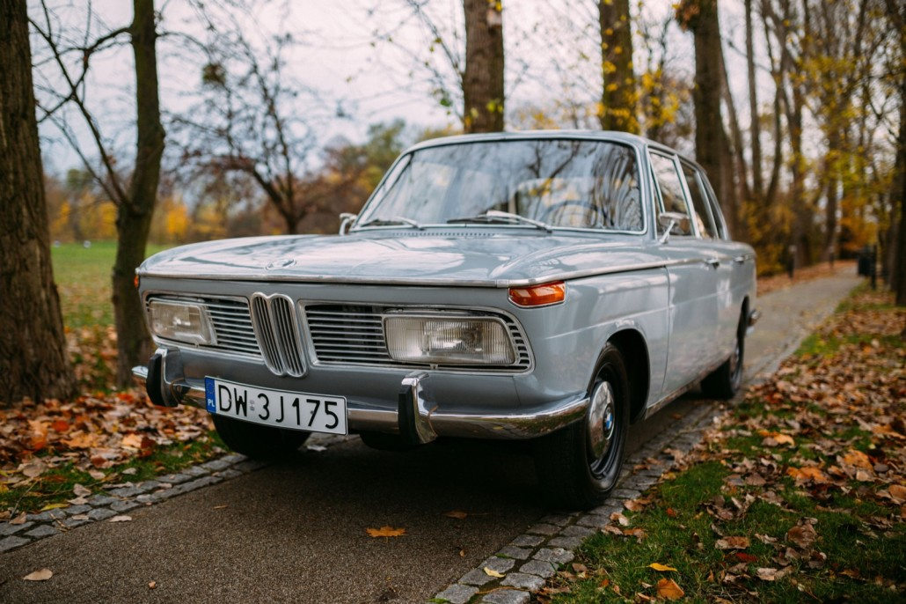

BMW NEUE KLASSE OPIS TEGO POJAZDU
BMW Neue Klasse – seria sedanów oraz coupé produkowanych pod niemiecką marką BMW w latach 1962–1977.Do napędu pojazdu używano benzynowych silników R4 M10, oprócz tego w pojeździe wykorzystano w pełni niezależne zawieszenie z kolumnami McPhersona z przodu oraz hamulce tarczowe. Początkowo samochody oferowane były wyłącznie jako 4-drzwiowe sedany bądź 2-drzwiowe coupé, w późniejszym czasie dostępny był także 2-drzwiowy sedan (seria 02).Czterodrzwiowy sedan został w 1972 roku zastąpiony przez nieco większą rodzinę E12 (seria 5). Modele coupé, 2000C i 2000CS, zostały zastąpione w 1969 przez E9 2800CS. Następcą dla dwudrzwiowego BMW 1600 został wprowadzony w 1975 model E21 320i.
